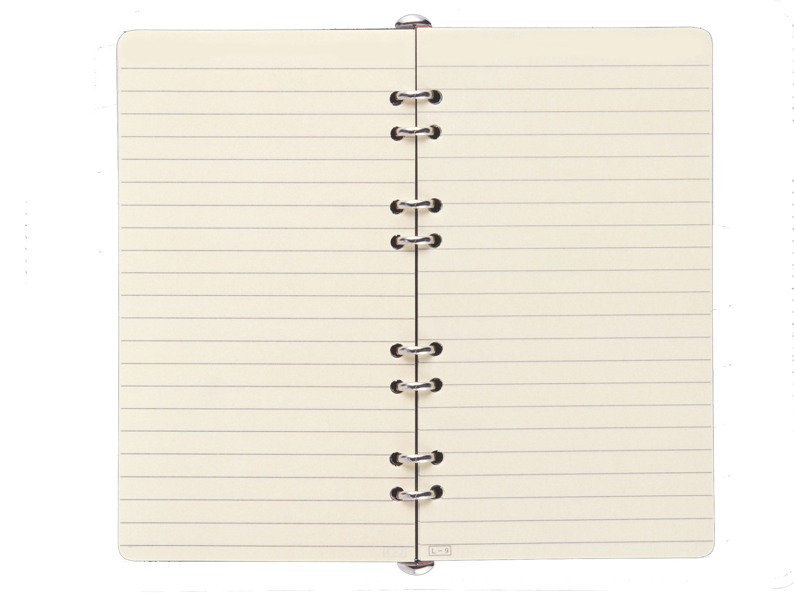

Вот каких результатов от ведения дневника можно ожидать:
Личная эффективность растет – минимум затрат максимам результатов;
Вы располагаете большим количеством свободным временем;
Ваша уверенность в себе крепнет;
Вы развиваете творческое мышление;
Вы воодушевлены и полны энтузиазма;
Вы совершенствуетесь;
Вы организованны;
Вы контролируете себя и свою жизнь.

Улучшается психическое здоровье
Регулярное ведение дневника может стать буфером для стресса в повседневной жизни. Например, кто-то ведет журнал благодарностей: уже одно это позволяет уяснить, что в вашей жизни есть много хорошего и не укорять себя за то, что у вас чего-нибудь нет.
Самооценка повысится, если вы будете писать об успехах или заполнять страницы аффирмациями. Настроение улучшится, если целью будет описать что-нибудь забавное или веселое. В дневнике можно «пережить» тревожные события в безопасной среде и проанализировать случившееся.
В обычной жизни мы часто вынуждены говорить то, чего от нас ждут, и вести себя соответствующе. В дневнике этого делать не нужно, можно расслабиться и побыть самим собой.
Начинайте с малого — не перегрузите себя в самом начале. Давайте себе маленькие задания, если совсем не знаете, о чём писать — это могут быть вопросы (они есть в конце статьи) или небольшие задания (скажем, перечислить людей, с которыми вы общались сегодня). Первым шагом должна стать привычка писать. И вот что вам поможет:
Выделите немного времени. Дайте себе буквально 5-10 минут, включите таймер и пишите. Писать долго поначалу страшно — мы думаем, что это занимает целую вечность. А 5-10 минут можно найти даже в самом загруженном дне. Вы удивитесь, сколько можно написать за десять минут!
Используйте бумагу. Конечно, можно писать в телефоне или на ноутбуке, но я считаю, что лучше избегать экранов и использовать блокнот. Позвольте себе снизить темп и погрузиться в процесс. Дайте себе время закончить мысли и записать их. Это по-настоящему крутой способ отдохнуть от нашего мира, где все утыкаются в телефоны.
Записывайте дату. Это поможет оглянуться назад и проанализировать то, что происходило с вами и как вы себя чувствовали в этот момент. Ещё так будет проще отслеживать, как часто вы пишите.
Будьте честными. Записи принадлежат только вам и больше никому. (Позаботьтесь об этом). Разрешите себе записывать правду о том, что происходит в вашей жизни, и свои мысли и отношения к этим событиям. Не пытайтесь писать то, что вы хотели бы чувствовать, вместо настоящих эмоций. Дайте себе время, замедлитесь и позвольте правде вылиться на бумагу.
Перечитывайте свои записи. Есть что-то важное и нужное в записях, даже если прямо сейчас вы этого не видите. Всегда храните дневники и перечитывайте их время от времени (например, в конце года вы прочтёте, что произошло с вами за этот год).